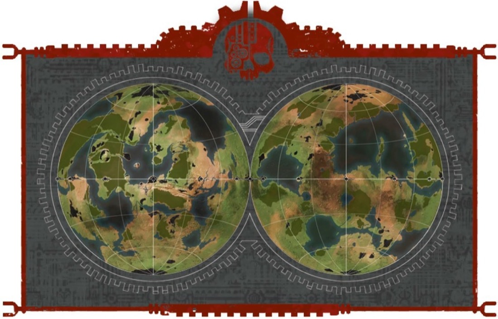

Treaty of Olympus
| Treaty of Olympus | |
|---|---|
| Also the Treaty of Mars; to the Mechanicus, the Treaty of Olympus Mons | |
 Mechanicum chart of the Tharsis region of Mars, with Olympus Mons marked as the seat of the Fabricator-General | |
| Type | Alliance and treaty of autonomy |
| Signed | 739.M30[a] |
| Location | Olympus Mons, Mars |
| Parties | Emperor of Mankind, for the Imperium Parliament of the Mechanicum, led by the Fabricator-General |
| Terms | |
| Mechanicum | Supply of weapons, ships and technicians for the Great Crusade; recognition of the Emperor as the Omnissiah |
| Imperium | Political autonomy for Mars and its Forge Worlds; exemption from the Imperial Truth; six Navigator houses and new Astropath choirs |
| Duration | Still in force after more than ten thousand years |
| Symbol | The double-headed Aquila |
The Treaty of Olympus, also called the Treaty of Mars and known to the Mechanicus as the Treaty of Olympus Mons, is the binding set of agreements between the Imperium of Mankind and the Mechanicum of Mars, which became the Adeptus Mechanicus. It was made between the Emperor of Mankind and the ruling parliament of Martian magi, and by it the Mechanicus bound itself to supply the engines of the Great Crusade in return for political autonomy, freedom to practise its faith and the means of reconnecting its scattered Forge Worlds.[1][2]
The treaty is regarded as the true founding act of the Imperium. The Unification Wars gave the Emperor Terra, but the alliance with Mars gave him the weapons, ships and technicians with which to reconquer the galaxy. To mark it he replaced his earlier sigil, a raptor and a lightning bolt, with the Aquila, a double-headed eagle whose two heads stand for Terra and Mars.[1] The treaty has been tested by the Schism of Mars, by the Age of Apostasy and by countless smaller disputes, and its terms remain the basis of the Mechanicus's autonomy in the 42nd millennium.
Background
[edit]
In the Dark Age of Technology Terra and Mars had been twin cores of a human federation and had cooperated for the benefit of both. Mars had been terraformed under a manufactured atmosphere, and its colonies flourished alongside those of Terra. The coming of the Age of Strife broke this partnership. Terra descended into the warring techno-barbarian states from which the Emperor later raised the Imperium, while on Mars the neglected infrastructure failed. The atmospheric shields and oxygen generators collapsed, the sparse vegetation died, and plagues and mutation swept through the survivors.[3]
From this ruin the Cult Mechanicus arose. Its priests made a religion of preserving the knowledge that kept them alive, and sought out the old machines beneath the dunes to restore shelters, generators and weapons against the mutants, the broken automata and the false minds of the surface. Under the direction of these tech-priests the survivors rebuilt, and in time the first temples and forge cities of the Machine God rose from the red sand. The parliament of magi that governed them became the Mechanicum, and its Explorator fleets pushed blindly into the Warp, founding new Forge Worlds across the galaxy in the likeness of Mars.[3]
The Mechanicus and the Terran warlords were enemies. The tech-priests had plundered the ruins of Terra in their search for lost knowledge, and the warlords had fought them. When the Emperor completed the Unification Wars he did so with the knowledge that Mars lay beyond his reach, a power as strong in its way as any of the states he had destroyed.[3]
Negotiation
[edit]The Emperor on Olympus Mons
[edit]The Emperor chose not to make war on Mars. He judged that to bring the Mechanicus to heel under the Imperial Truth would be long and wasteful, and he travelled to the Red Planet in peace, in a refurbished Terran voidship. According to the Mechanicus's own records, he made first contact on the summit of Olympus Mons, the greatest mountain on Mars, in 739.M30.[1]
When he stepped from the ship, surrounded by the radiance his psychic power could conjure, many of the tech-priests present believed him to be the Omnissiah, the incarnation of the Machine God that their prophecies had long promised. He was given an audience by the parliament of magi under the Fabricator-General. His arrival set off political turmoil, for the Martians had purged every trace of mutation from their gene-stock and could not account for the psyker of unmatched power who stood before them.[3]
He spoke of the age when Terra and Mars had together formed the heart of a human federation, and of the golden age he meant to restore. He offered an alliance, and he did not hide that if it were refused the Legiones Astartes, the transhuman warriors that he had raised on Terra, could be brought to Mars. The magi did not need the threat spelled out.[3]

The compromise of the Omnissiah
[edit]The negotiations were conducted amid bloodshed within the Mechanicum, for the proposal split the parliament. The magi who held that the Emperor was the Omnissiah argued that the alliance was the fulfilment of prophecy. Those who feared that Terra would swallow Mars argued against it. The accounts of the Mechanicus say that those who opposed the Emperor were silenced or won over, and that the treaty was agreed after some bitter internal strife.[3]
The central difficulty was religious. The Emperor's own creed, the Imperial Truth, rejected all gods and all religion, and the Cult Mechanicus could not abandon the faith that defined its existence. The two sides reached a compromise to which the Emperor agreed with reluctance. He would be presented to the masses of the Cult as the Omnissiah, the living incarnation of the Machine God, in return for the aid of the Mechanicus. Although this contradicted the Imperial Truth, he accepted it as an acceptable evil and decided that the question of the Mechanicus's belief could wait until the end of the crusade.[1][3]
Terms
[edit]Obligations of the Imperium
[edit]The Imperium undertook to respect the political independence of the Mechanicum and its Forge Worlds, and to exempt the Cult Mechanicus from the Imperial Truth so that its followers could continue to worship the Machine God. It undertook to supply six Navigator houses and new choirs of Astropaths, so that the Mechanicus could unite its far-flung Forge Worlds, many of which had been lost to Mars since the Strife, and could continue its Quest for Knowledge more easily.[1]
Obligations of the Mechanicum
[edit]In return the Mechanicus agreed to supply the weapons, voidships, materiel and technicians that the Emperor's armies would need to begin the Great Crusade and to reunite the human galaxy under the banner of the Imperium. The forges of Mars and of its Forge Worlds were to equip the Space Marine Legions, the Imperial Army and the expeditionary fleets, and to field the Skitarii, the Titan Legions and the Legio Cybernetica alongside them.[1][3]
Forbidden knowledge
[edit]The Emperor placed one condition of his own upon the Mechanicum. He was well aware of the history of the Men of Iron, the machines that had ruled the surface of Mars in the early Strife, and of the susceptibility of certain technologies to the corruption of the Chaos Gods. He forbade the Mechanicus to pursue several forms of knowledge, above all the study or construction of the Silica Animus, machines possessed of full self-awareness and independent of human control. He listed the machines and concepts that could lead to the fusion of technology with the sorcery of Chaos, and ordered them taboo, to be researched on pain of death. As many such devices already existed in the forge cities of Mars, he ordered the Fabricator-General to seal all of them in a special cache that only the Emperor or his chosen representatives could open. This was the Vaults of Moravec.[3]
The Mechanicum accepted the restraint grudgingly. It cut across the Quest for Knowledge, and the resentment it caused festered through two centuries, to re-emerge in the Horus Heresy.[3]
Consequences
[edit]Great Crusade
[edit]With the treaty sealed, the forges of Mars poured out the machines of the crusade. The Mechanicus supplied armour and weapons for the Legions, ships for the expeditionary fleets and the knights, titans and skitarii that marched beside them. Its Forge Worlds, restored to contact with Mars by the Navigators of the six houses, took on the role of industrial centres for the Imperial war effort. The Tech-priests regarded the Emperor as a living god and the Great Crusade as the Omnissiah's own work.[3]
Schism of Mars
[edit]The treaty was shaken by the Horus Heresy. The Fabricator-General Kelbor-Hal declared for Horus and the Mechanicum split in the Schism of Mars, which began in 005.M31. The loyalists under Zagreus Kane fought the traitor forces, later called the Dark Mechanicum, in a war that mirrored those across the galaxy. Titan fought Titan and Skitarii fought Skitarii. In 012.M31 the Council of Terra formally separated the loyal Adeptus Mechanicus from the corrupted Mechanicum and named Kane as its first Fabricator-General and High Lord, an act that confirmed the treaty's terms for the loyalist half and cut off the traitors from its protection.[4][3] The followers of Kelbor-Hal taken captive were put to death in their thousands.
Autonomy within the Imperium
[edit]The Adeptus Mechanicus is the one body of the Imperium that predates the Imperium itself. Its autonomy under the treaty has remained as wide as any adeptus enjoys. It governs Mars and its Forge Worlds, trains its own priests and soldiers, keeps its own fleets and builds its own Titans. It is spared the attention of the Ecclesiarchy and the Inquisition far more than other adepta, though not entirely.[2] A permanent seat on the High Lords of Terra belongs to the Fabricator-General, a privilege the Mechanicus holds as of right.
The treaty is not an alliance of faiths. The Mechanicus holds the Emperor to be the Omnissiah and the supreme object of its worship, but it does not accept the doctrine of the Imperial Cult and has little regard for the Ecclesiarchy. This has made the treaty an object of resentment to the priests of the Cult, who consider the Mechanicus's belief to be a heresy that survives only because the Imperium cannot afford to lose it.[5]
Era Indomitus
[edit]When Roboute Guilliman returned to Terra at the end of the 41st millennium he found the treaty as it had been for ten thousand years. The Mechanicus took the lead in the creation of the Primaris Space Marines under Belisarius Cawl, an Archmagos Dominus of Mars whose innovations are regarded by orthodox magi as dangerous. Cawl repeatedly asked the primarch to name him Fabricator-General, and Guilliman refused, explaining that he lacked the power to do so, and that to try would provoke a second Martian civil war among those who counted Cawl and his followers as hereteks. The Imperial Regent has therefore treated the treaty as it was written, and the Fabricator-General Xasandera Valdet sits among the High Lords by its terms.[6]
Legacy
[edit]The treaty stands in Imperial law as an exception to the principle that every adeptus answers to Terra. It has outlasted the Emperor's own rule in person, the Heresy that nearly broke it and ten millennia of mutual suspicion, and the Imperium of the Era Indomitus still depends on the forges it protects.[2]
See also
[edit]Notes
[edit]- ^ Imperial records place the treaty variously in the closing years of the Unification Wars and at the start of the Great Crusade. The earliest accounts of the Mechanicum give 739.M30; accounts compiled on Terra describe it only as "in the time of the Emperor's first coming to Mars".
References
[edit]- ^ a b c d e f Liber Primarchus (M32, revised M41). Administratum Archive, Terra.
- ^ a b c Codex Imperialis (rev. 980.M41). Adeptus Terra.
- ^ a b c d e f g h i j k l Annals of the Mechanicum (M31, restored M33). Adeptus Mechanicus, Mars.
- ^ Chronicles of the Heresy (sealed). Logos Historica Verita, Terra.
- ^ Liber Ecclesiasticus (M37). Adeptus Ministorum.
- ^ Records of the Indomitus Crusade (ongoing). Office of the Lord Commander.